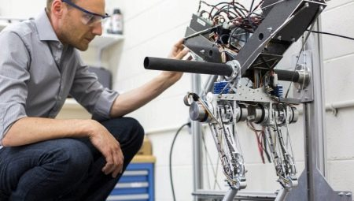

Разработчик роботов
 Разработчик роботов – это специалист, который создает и вводит в эксплуатацию роботов и сложные роботизированные системы предназначенные для автоматизации процессов в различных сферах деятельности: промышленном производстве, медицине, космических программах, авиации, военном деле, сфере развлечений и т.д.
Личные качества в професии
- Интерес к мехатронике, информатике, программированию
- Усидчивость
- Развитое конструкторское мышление
- Аналитический склад ума
- Ответственность
- Внимательность
Что нужно знать и уметь
- Механику, автоматику, электронику, программирование
- Составлять документацию устройств и механизмов
- Отслеживать иновации в сфере технологий
Где работать
- Констркуторские бюро
- Медицинская сфера
- Промышленные производства
- Компании, занимающиеся разработкой робототехники